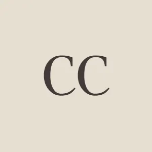

- Printed source
- Carolus Clusius, Exoticorum libri decem (1605), p. 100.
Dodo / Primary source
Carolus Clusius
Exoticorum libri decem

Carolus ClusiusImage & authority record ↗
01 / Publication1605Printed edition
02 / Place in accountLeidenSpecimen from Mauritius
Original text
p. 100 · extractVerumenimverò, concinnatâ & descriptâ jam quâ potui fide hujus avis historiâ, illius crus genu tenus rescissum, apud Cl. V. Petrum Pawium, primarium artis Medicæ in Academia Lugduno-Batava Professorem videre contigit recens è Mauritii Insula relatum.
English
After I had written down the history of this bird as well as I could, I happened to see in the house of Peter Pawius, Professor of Medicine in the University of Leyden, a leg cut off at the knee, and recently brought from Mauritius.
English: Strickland & Melville, 1848, p. 125 ↗.
Edition
Further reading
- 01Hugh Edwin Strickland and Alexander Gordon Melville, The Dodo and Its Kindred (1848), pp. 12–17, 125. ↗
London: Reeve, Benham, and Reeve.
Reference
Cite this source
Carolus Clusius, Exoticorum libri decem (1605), p. 100.